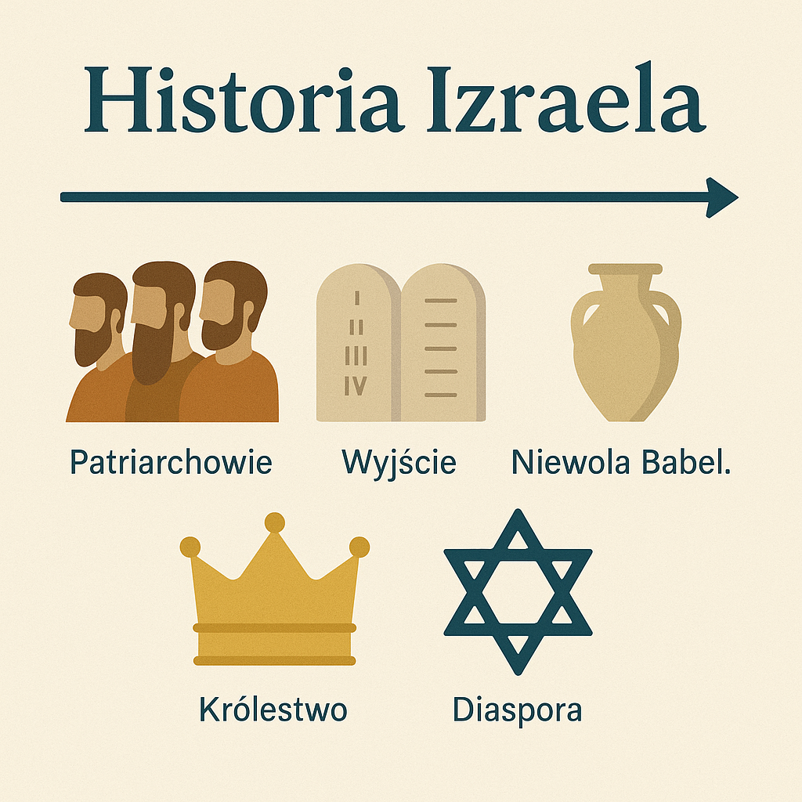

Judaizm wywodzi się ze starożytnego Bliskiego Wschodu, a jego początki sięgają około II tysiąclecia p.n.e. Kluczową postacią jest Abraham, który według tradycji zawarł przymierze z Bogiem. Patriarchowie - Abraham, Izaak i Jakub - uznawani są za duchowych ojców narodu izraelskiego. Jednym z centralnych wydarzeń jest Wyjście z Egiptu (Exodus) - historia zniewolenia Hebrajczyków i ich wyzwolenia przez Mojżesza. Mojżesz otrzymał od Boga Dekalog na górze Synaj, co stało się fundamentem żydowskiego prawa - Tory. Około 1000 r. p.n.e. powstało zjednoczone Królestwo Izraela, rządzone przez królów: Saula, Dawida i Salomona. Za panowania Salomona wzniesiono Pierwszą Świątynię w Jerozolimie, będącą centralnym miejscem kultu. Po jego śmierci królestwo rozpadło się na Izrael i Judę. W VI w. p.n.e. Babilończycy zniszczyli Jerozolimę i Pierwszą Świątynię, a ludność została przesiedlona do Babilonii. Okres ten zapoczątkował rozwój religijnego życia poza świątynią i większy nacisk na studiowanie Pism. Po powrocie z niewoli odbudowano Świątynię (Druga Świątynia). Po podbojach Aleksandra Wielkiego judaizm zetknął się z kulturą grecką, co prowadziło do napięć i powstań (np. powstanie Machabeuszy). Pod panowaniem rzymskim Żydzi kilkukrotnie buntowali się, aż do zniszczenia Drugiej Świątyni w 70 r. n.e. Po zburzeniu Świątyni judaizm przeszedł transformację - powstał judaizm rabiniczny, oparty na synagogach, modlitwie i studiowaniu Tory. Żydzi żyli w diasporze przez wiele stuleci, tworząc różne tradycje (aszkenazyjską, sefardyjską, mizrachijską). Od XIX wieku judaizm mierzył się z nowymi nurtami: oświeceniem, emancypacją, ruchem reform. Tragiczne doświadczenia Holokaustu doprowadziły do niemal całkowitej zagłady Żydów w Europie. W 1948 roku powstało państwo Izrael, co miało ogromne znaczenie religijne i polityczne dla Żydów na całym świecie.
Historia
